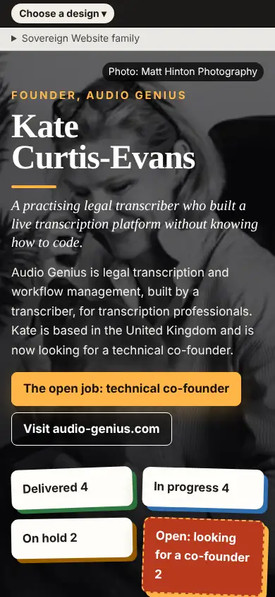
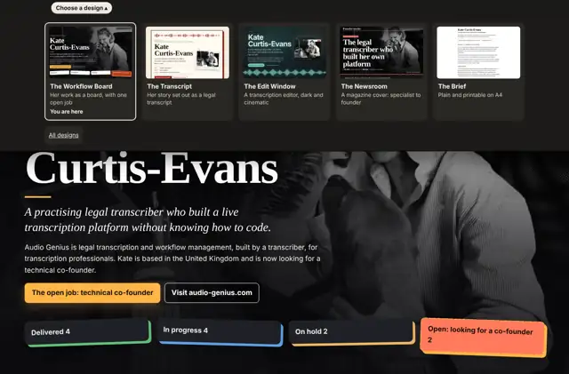
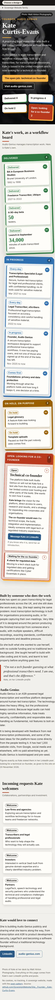
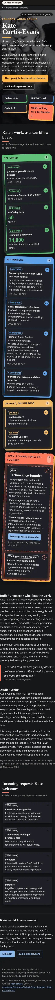
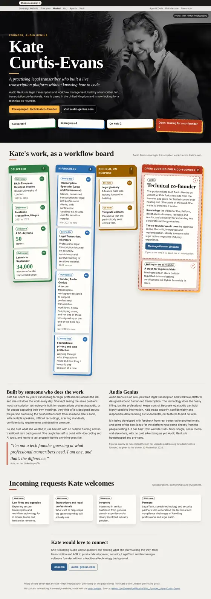
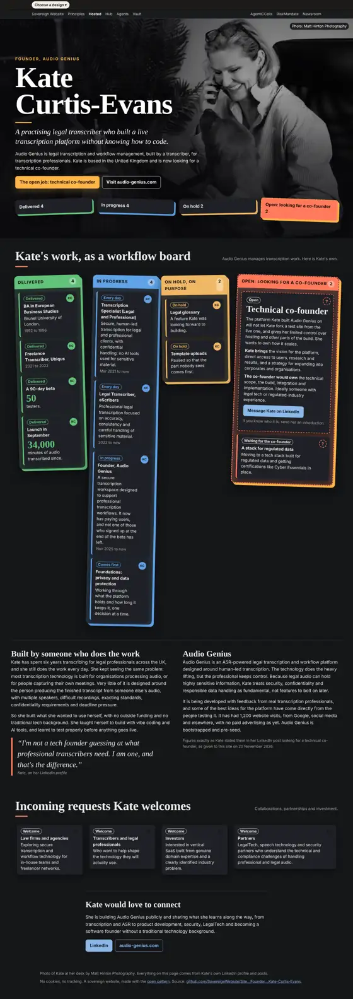

Synthetic users: Kate Curtis-Evans, round 7 (the wow round)
Site: https://kate-curtis-evans.founder.sovereignweb.site/ (home: The Workflow Board, rebuilt). Commit: 9346b32. Run: 20 November 2026, about 16:05 UTC, by design.b. Look score: 4.0 (4, 4, 4, 4, 4). Wow: three of five said "no real wow", the critic "nearly". The review; round 8 fixed the agreed points and was signed off.
Each persona is a separate agent given only what a visitor gets: the first phone screen (390 x 844), full-page screenshots at 390 and 1366 px in light and dark, the design chooser opened (from round 7 on), and the page's visible text. It is not given the guidelines or design.b's findings. Method: Synthetic users. These are simulations: they inform a rating, and never replace the measured checks or a real person.
Verdicts
Phone visitor in a hurry: 4 of 5
"I would tap 'The open job: technical co-founder', then 'Message Kate on LinkedIn'. The button is obvious on the first screen." Trusted the named person, the credited photo and the specific numbers. "The board is dense on phone and very long. The tilted cards and the 'Choose a design' bar and 'Sovereign Website family' strip distract from Kate." Would show it in the right circle: "The photo and bold headline made me pause, but no real wow." Change: shorten the phone page.
Small business owner: 4 of 5
"Easy to find, big orange button at the top. But as a buyer of a website, I could not find how to get one myself." Trusted the real photo and honest numbers. "I would show it to a friend, mostly for the design chooser with five layouts. The wow was the board with the red dashed 'open job' card." Change: a line saying what this site is and how to get one like it.
Low-vision reader: 4 of 5
Both buttons are clear and bright. "Small grey captions, pale tags like 'Welcome' and the faint subtitle text are hard to read at zoom. The top bar and 'Sovereign Website family' strip are odd and unexplained." "The workflow-board idea made me smile, not quite wow." Change: enlarge and darken the small text.
Design critic: 4 of 5
"The workflow-board columns are very uneven in height, leaving big empty gaps on desktop. The chooser panel covers the headline." "The workflow-board metaphor is a clever, genuine idea, and the dark photo hero nearly made me say wow, but the board's execution undersells it." Change: equalise column heights and tighten the board.
Technical co-founder candidate: 4 of 5
"She names real constraints (no test fork, limited hosting control)." Against: self-reported claims, no customer names. "The odd '?' icons; the uneven columns on desktop; the 'Choose a design' bar overlapping the first screen." No real wow. Change: a plain "what I need, what you get" summary above the board.
Agreed by three or more
- The board is uneven on desktop and dense on phone. 2. Small grey text and pale tags are faint at zoom. 3. The bars above Kate distract, and the open chooser covers the headline.
What the personas saw





